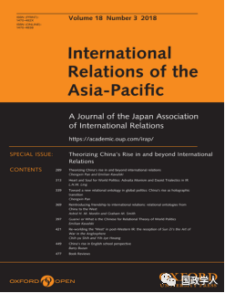
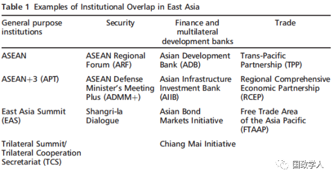
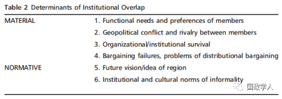
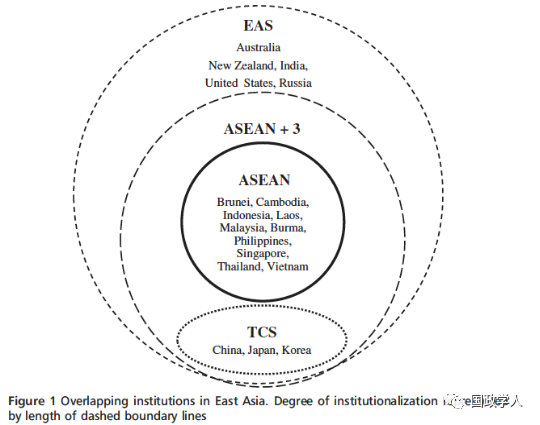

收录于合集

简 介
** 【作者】** Andrew I. Yeo，美国华盛顿天主教大学政治学系副教授。他的研究和教学兴趣包括国际关系理论，东亚区域主义，亚洲安全，信仰、主意和世界观的形成，公民社会，韩国政治等。
** 【 编译 】** 丁伟航
** **【 校对 】****彭小朵
** **【 期刊 】****International Relations of the Asia-Pacific Volume 18, (2018) 161–191
** **【 引用 】****Yeo, and I. Andrew . “Overlapping regionalism in East Asia: determinants and potential effects.” International Relations of the Asia-Pacific (2016):lcw015.
《亚太国际关系》（International Relations of the Asia- Pacific）是发表亚太地区国际关系研究的重要国际关系类期刊。该期刊于2001年推出，每年1月、5月和9月发行三次。该期刊关注的重点是：亚太地区的国家间关系、亚太地区与世界其他地区的关系、涉及亚太一国或多国的国际关系的一般问题和理论。

东亚的重叠式区域主义： 决定因素和潜在影响 ****
Overlapping regionalism in East Asia: determinants and potential effects ****
内容提要
曾严重缺乏制度化的东亚，自冷战结束以来 经过 快速的制度建设过程后，在成员和授权方面存在显著的组织重叠现象。本文考察了东亚制度重叠的驱动因素和潜在影响。它认为，亚洲制度的非正式性以及成员国间区域主义的竞争愿景容易使该地区出现重叠式区域主义。就目前而言，这种重叠的后果是积极的。但是，长远来看，亚洲政策制定者们必须考虑制度设计问题，以避免将区域体系引致推动区域竞争和制度竞争的方向。为了说明制度重叠的过程，作者从东盟制度体系（制度集合）出发，选取了一些区域组织的案例（子集）：东盟 +3，东亚峰会和中日韩三国合作秘书处。
文章导读
**1
**
介绍
东亚曾被认为是一个严重缺乏制度化的地区，如今拥有大量正式或非正式的多边制度，但大多是非正式制度。此外，冷战结束以来，由于制度建设的快速推进，导致东亚制度出现了成员和授权的显著重叠。作为一个比世界其他地区制度重叠率更快的动态区域，东亚为研究 重叠式区域制度 的建立和后果提供了肥沃的土壤。
迄今为止，许多研究探索了东亚区域主义和区域制度的兴起，确定了推动区域主义的一系列政治经济、地缘政治和规范性因素。然而，除了一些值得注意的例外情况，对区域制度的重叠性及其对东亚未来意义的研究却不多见。通过研究现有关于制度重叠性和机制复杂性的案例来弥补这一空白。在本文中， 作者提供了一个分析框架，用于探究制度重叠的决定因素及其对东亚区域治理的影响 。在现有的制度重叠和制度复杂性理论的基础上，作者将它们应用于东亚，希望与其他地区进行更深入的比较，而不仅是提出一些强烈的因果性主张。
作者发现，制度的非正式性以及亚洲各行为体间的区域主义致使亚洲容易出现制度重叠。功能分化的非正式性允许各国发展不同类型的组织，并且亚洲区域制度的成员资格门槛较低，大多数成员国在不需向其他制度作出过度承诺的前提下，就能加入许多制度。然而，从长计议，亚洲的政策制定者必须考虑制度设计问题，以避免将区域体系结构引致一个推动制度竞争和区域竞争的方向。
作者论点如下，第一部分，回顾了现有关于制度重叠的理论文献，它们大部分与亚洲区域主义的研究无关。 第二部分，讨论亚洲重叠式区域主义背后的驱动因素，强调促使政策制定者行为产生的物质性和规范性动因 。第三部分，提供了在东南亚和东北亚“常规实践”（而非“特定任务”）的区域制度（子集）间的制度重叠的实证例子，这包括“东盟+3”（APT），东亚峰会（EAS）和中日韩三国合作秘书处（TCS）。第四部分，讨论了重叠式区域主义的后果。在东盟制度体系中，制度间的协调和功能差异是最常见的结果。然而，从长远来看，地缘政治特征和制度竞争带来了更大的分离和制度分裂的风险。第五部分，通过近来的一些案例，总结了亚洲制度如何为政权复杂性和制度重叠的比较分析提供答案，提出新问题。
**2
**
重叠式区域主义的形成
东亚制度建设主要发生于冷战结束以后。直到冷战结束，亚洲的区域框架都是由美国领导的双边同盟体系所确定的。由于亚洲多边制度的缺乏，亚伦·弗里德博等学者把国际制度中的亚洲区域制度和欧洲区域制度比作“稀粥”和“浓汤”。然而，在冷战后的二十年里，国内和跨国层面的一些物质性和规范性因素促使亚洲的政策制定者们建立了许多制度。冷战秩序的崩溃为全球和区域性的制度合作提供了更多的政治机会。在亚洲，苏联的崩溃使各国将他们的注意力从紧张的地缘政治局势转移到自身安全问题，特别是经济问题。
2.1 为制度建设做好准备
20世纪90年代初，亚洲似乎已具备了竞争的条件，但在事后看来，人们可能会提出不同的主张，认为该区域曾为区域制度建设做好准备。支撑这一观点有如下三个原因， 首先，与已经建立强大制度的欧洲相比，亚洲制度建设的前景仍然有很大发展空间。 除了美国的双边联盟和东盟外，亚洲先前并不存在区域制度，为新的制度安排留下了很大的创新和想象空间。东盟以外的行为体对现存的多边制度没有任何固有的兴趣，因此没有理由以制度为由阻止新的多边安排兴起。当然，制度建设的过程仍然存在争议，局限于制度的形式，而不是反对建立多边倡议以解决新出现的经济和安全问题的实质性想法。 **其次，在 20世纪80和90年代由日本的生产网络日益推动亚洲经济相互依存，中国随后迅速加入了区域经济一体化，对区域制度产生了功能性需求。**国家政策制定者和经济界精英主导的国内同盟有利于维持宏观经济稳定，外国投资、全球市场准入和经济增长促使区域制度的形成得到新的支持。 第三，如前所述，后冷战时期的紧迫局势促使亚洲政策制定者们将注意力转向内部寻找新问题。 在战略方面，由于美国在亚洲的未来具有不确定性；日本的角色以及中国和俄罗斯成为亚洲多极化格局中新的权力中心等新问题的出现。因此，亚洲国家正在寻求新的制度安排，同时美国承诺进入该地区，并允许各行为体建立可以代替美国领导下的双边同盟的制度。因此，20世纪90年代初，亚洲区域行为体在欧洲安全与合作会议之后就提出了亚洲区域安全合作的若干想法。
目前为止，有关研究主要围绕着冷战后东亚早期制度建设的条件。在20世纪90年代和21世纪初，自下而上的区域化进程和自上而下的区域主义进程将不可避免地为制度建设提供了动机，政府也为应对更大程度的相互依赖而寻找方法。然而， 上述论点并未解释为什么东亚区域主义具有增加机制复杂性和制度重叠性的特征。这一论点可以从表 1所显示的若干东亚多边区域倡议显现出来。

它既没有解释为什么政策制定者避免（或被挫败）建立一个总体、全面的制度以解决该区域的经济和安全问题，比如欧盟、非盟或美洲国家组织。 最后，虽然学者们非常重视亚洲区域主义的非正式和基于共识的性质，但并未充分探究政策制定者为何加入新的区域制度或扩大对现有制度的授权，即使以牺牲效率为代价。
2.2 制度重叠的概念
现有的研究探索了多个重叠制度的决定因素和影响，产生了用于描述复杂制度联系的不同理论概念。Raustiala 和Victor; Alter 和Meunier ;和Orsini et al.使用术语“制度复合体”来描述“管理特定问题领域的一系列部分重叠和非等级制度”。Muzaka倾向于将制度重叠定义为管理问题领域的正式和非正式安排。Laatikainen和Smith在描述全球和区域制度之间的相互作用时使用了交叉多边主义这一术语。Aggarwal还研究了谈判和讨价还价过程，这些过程导致在区域和全球层面建立重叠、嵌套和平行的制度。虽然每种概念界定根据研究人员的经验问题和范围条件而具有细微差别，但他们研究的主旨都指向区域或全球重叠制度的某些方面。
制度重叠通常是指两个方面的重叠：成员和授权。 重叠的制度具有相互交叉的目标成员，这些成员在不同程度上重叠。例如，两个不同制度的成员可能部分交叉，类似于韦恩图中两个同心圆的重叠。或者，一个制度可能作为另一个较大制度的子集存在，表明嵌套关系，就像俄罗斯套娃。
授权包括条约、章程或协议中指定的制度的功能和任务。重叠的授权表明“成员国受到同样的承诺”。正如Urpelainen和Van de Graaf所述，“一个制度的功能范围突出到另一个制度的功能范围内”。此前，已经探讨了重叠的其他方面，包括资源和行动。然而，Nolte认为，这两个方面都属于授权的范围，或者更准确地说，是授权的实践应用与操作。相反，学者可以区分在概念上的重叠的授权和在实践中重叠的授权，而不是创建其他类别。
2.3 重叠式区域主义的决定因素：重要性和规范性问题
在回答重叠区域主义的驱动因素之前，必须先探究政策制定者为什么决定首先建立新的制度（Nolte，2014,14）。为什么政府决定加入新机构？或者正如Urpelainen和Van de Graaf（2015）所问，为什么各国不利用现有的区域制度？欧洲和拉美区域制度方面的学术研究都指向各种物质性和规范性解释，其中没有一个是相互排斥的。一些变量可能是重叠的直接驱动因素，其他变量更多地作为启动或许可因素存在。
在最基本的层面上，理性制度主义认为，国际制度来源于行为体的偏好。如果现有制度失去其效力或合法性并且未能满足行为体的需求，那么新的制度就要被建立。随着新的区域制度的建立，或者当区域内出现新问题而现有机构未能充分解决时，也会建立新的制度。
新的制度经常根植于现有制度之上。一方面，建立新制度而不再依赖执行相似功能的现有制度，这可能会出现谈判失败。正如Urpelainen and Van de Graaf 所言，制度的创造很可能是因为挑战者坚持改革，但守成者容许这些改革的成本很高。另一方面，不同成员之间的不同利益可能需要多个制度来满足不同的功能需求。因此，有人会认为，创建多个制度，虽然看起来是低效的，但实际上是一个合理的战略。当成员国既包括发达国家，也包括发展中国家时，更是如此。
地缘政治因素也可能促使各国建立重叠的制度。个体成员之间的冲突和竞争，特别是存在主要霸权国的情况下，也可能产生制度重叠。因为各制度努力保持相关性，这种竞争也存在于组织层面。因此，对现有制度中具有既得利益的行为体的变革的抵制，将导致新制度在旧制度之上分层。
虽然有关制度重叠的论证多以理性主义- 唯物主义为主，但它们与规范性论证相结合对制度重叠进行了解释。正如Muzaka所说，机制（制度）被视为“寻求对某些行为体持有对特定问题领域的特定含义、原则、信仰、想法和规范性进行定义、排序、规范化和稳定的过程，而这些行为体以牺牲和边缘化其他行为体为代价。从更广泛的角度考虑，在思考时超越具体问题领域，以形成一个新的组织可能体现或代表该地区或特定区域项目的未来愿景。例如，次区域的分化或分裂可能也是催生新制度的重要因素。当然，这种制度重叠的“规范”方法与理性主义动机是相交叉的，特别是当制度建设被当作促进某一成员国首选区域项目，或为了平衡或排除该区域内其他成员国影响时的一种手段。
最后，制度的非正式性有助于促进制度重叠，特别是通过授权扩展的方式。 理性制度主义描述了非正式政府间组织的灵活性，这种灵活性可以通过“高度不完整的合同”来解释。建构主义者也认识到非正式制度的好处，但他们倾向于将制度的非正式性归因于更广泛的区域规范和文化。在由非正式规范和共识所定义的区域，比由契约、法律义务所规定的区域更容易形成制度重叠。
上文就物质性和规范性两个方面给予归纳，下表2列出了导致制度重叠的不同因素的大概类型。

依据分类，作者思考了制度重叠是如何以及它为什么成为东亚区域主义特征的原因。 重叠式区域主义的驱动因素是物质性和规范性因素的结合。首先，在国内层面，区域制度的建立是由成员国的功能需求驱动的。 如前所述，亚洲区域化和日益增加的经济相互依赖性已经产生了对从灾难管理到金融和银行业等一系列问题对制度协调与合作的需求。 第二，在国际层面，战略环境和地区均势加剧地缘政治的紧张局势。 各国建立或促进新的区域制度，以平衡或抑制潜在区域竞争对手建立的其他制度的影响力。例如，中国欢迎除美国以外的东亚制度。同样，日本试图通过扩大区域制度成员范围来削弱中国的影响力。 第三，制度重叠可能源于狭隘的制度利益。 在亚洲，这主要与东盟的制度实践有关。为了继续保留东亚区域主义的“驾驶员位置”，东盟将自己置于全区域制度建设相关的每一场辩论的中心。因此，由于东盟在区域制度建设中的核心存在，制度重叠得以展现。正如乔·弗里德里希斯所言，“应对东亚安全挑战最复杂的制度结构是围绕东盟的区域制度群。这是无可争议的”。因此，新的制度安排要么包括东盟和其他东盟制度集（群），要么与这些制度重叠。其他国家通常默许东盟的中心地位，因为东盟作为一个由中小国家组成的集团，被视为一个更中立的区域主义仲裁者。此外，东盟的非正式性及其对主权规范的遵守，意味着以东盟为中心的制度不会威胁到成员国的国内要务。 第四，制度重叠可能由谈判失败引起。 在某些方面，东亚峰会是APT（东盟10+3）进程之外发展起来的，因为成员国对谁应该或不应该被纳入新的区域集团仍存在冲突。一些国家，如中国，若不能谈判出更为排他性的区域主义形式，仅限于在东亚范围内“遵守规则的”制度成员身份，可能会满意东亚峰会（EAS）和东盟10+3（APT）作为两个独立进程同时存在。
在东亚，规范性问题也是制度重叠的驱动因素。 更具体而言，亚太区域主义和东亚区域主义之间的竞争愿景导致了多个重叠的制度建立。正如Cho和Park指出，亚洲领导权的内容和性质与边界和成员资格问题相关。对亚洲区域主义更具包容性的认识是可以接受西方成员国，尤其是美国和澳大利亚。相比之下，东亚区域主义的排他性版本则鼓吹“亚洲人的亚洲”，即区域建设仅限于亚洲文化和地理边界的国家。因此，促进不同制度安排的不同东亚愿景，比理性制度主义者所讨论的谈判失败更为深刻。
包容性的亚太模式与排他性的东亚区域主义愿景之间的紧张关系超越了文化和地理意义。 这一区别具有深刻的政治意义，这种区别具有深刻的政治性，对区域制度建设具有重要的政策影响。在后冷战时期，对亚太模式的偏好表明对美国和西方插手亚洲的支持。与此同时，要求建立地理上排他性的东亚集团被认为是希望减少美国在该地区的影响。相反，考虑到区域安全问题，对亚洲和平主义的偏好表明了对美国双边联盟的更大支持。区域主义的两种愿景也在发达国家和发展中国家的利益之间达成了一致。20世纪90年代亚太经合组织（APEC）的内部辩论突出了这种分歧。英美经济体希望通过严格的贸易自由化规则来制定具有约束力的综合目标。相反，发展中经济体支持贸易便利化而不是贸易自由化。
**3
**
东亚区域主义的尝试
为了说明重叠式东亚区域主义的过程，作者研究了一系列来自东盟并在近二十年间相继发展的制度。该子集包括东盟10+3（APT），东亚峰会（EAS）和中日韩三国合作秘书处（CJK TCS）。值得关注的是，这些制度作为非正式政府间制度存在，而不是像东盟或亚太经合组织这样的正式性区域组织。APT和EAS分别代表着区域主义从东南亚向东北亚和亚太地区扩张。它们属于东盟制度的范畴，没有独立的秘书处（东盟提供秘书服务）。同时，TCS与APT的区别在于APT增加了三个东北亚国家形成了自己的次区域分组。虽然TCS没有对成员国行使独立的权力，但它确实带有自己的制度性标志，象征性赋予中日韩三边合作与东盟不同的身份。
作者选择这三个相对简单的制度案例进行测试，以检验现有的制度重叠理论如何适用于亚洲背景。下图说明了上述制度的重叠性质。在作者的分析中，东盟的起源被视为已定的，因为重点是制度重叠，而不是区域组织本身的形成。因此，从1997年亚洲金融危机（AFC）入手，为冷战后区域制度建设提供了重要的催化剂。

3.1 东盟10+3（APT）
在亚洲金融危机之前，东亚区域主义由亚太经合组织和东盟地区论坛所代表的更广泛的包容性制度为主导。亚太经合组织主要关注区域贸易问题，而东盟地区论坛则是为解决亚太及其他地区出现安全问题而设立的。然而，随着1997年亚洲金融危机（AFC）的爆发，区域制度建设轨迹发生了变化。如果20世纪90年代初亚太经合组织和东盟地区论坛的到来为后冷战时期亚洲区域制度建设定下了基调，那么正是亚洲金融危机促使决策者向内看（即面向东亚而非亚太地区），更长远地思考西方影响之外的东亚共同体建设。
3.2 东亚峰会（EAS）
东亚峰会（EAS）基本上是在APT进程中发展起来的。首次出现在“东亚愿景小组”（EAVG）报告“面向东亚共同体”，建议东盟10+3（APT）成员将APT的年度首脑会议转变为东亚首脑会议。
3.3 三国合作秘书处（TCS）
与东亚峰会一样，中日韩三国首脑会议和三国合作秘书处也是从东盟10+3（APT）中分离出来的。然而，它是通过一个 次区域分化过程 来填补东北亚空置的制度空间来实现的。
3.4 评价制度重叠的决定因素
由于这些制度与东盟制度集（群）的联系，APT和EAS自然是重叠的。EAS和APT的组织结构和制度化进程与东盟的结构密切相关。例如，APT和EAS峰会通常在东盟峰会之后进行。然而，中日韩三边峰会和三国合作秘书处是从APT进程中分离出来的，三个东北亚国家在次区域层面将其制度与东盟区分开来。
除了重叠、嵌套的成员身份外，APT、EAS和TCS在其任务中也表现出明显的重叠。EAS和TCS被描述为促进“对话”的过程，而APT支持“一体化”过程。但是，鉴于三个制度所关注的议题领域随着时间的推移而扩大，它们的任务不可避免地交织在一起。在《2015年吉隆坡东亚峰会十周年宣言》中，各成员国表示，东亚峰会将继续作为领导人领导的对话论坛，就共同关心和关注的广泛战略，政治和经济问题进行对话。促进东亚地区的和平，稳定和经济繁荣。在2015年三边峰会后，中国、日本和韩国领导人发表了一份表达类似目标的联合声明，肯定深化三方合作将有助于三国间双边关系的稳定发展，实现东北亚的和平、繁荣与稳定。因此，亚洲制度的“一般实践”背后的联合声明和指导原则往往反映出比实践更有抱负的任务。正如一位学者指出，“关于东亚一体化的许多讨论更多是关于愿景，而不是关于实现这一愿景的实际障碍”。 无论是由规范性还是物质性过程驱动，亚洲制度规则的非正式性确实有助于扩大授权范围，进而导致制度重叠。
区域竞争表现为亚洲区域主义（包容性vs.排他性）或地缘政治对抗（中国vs.日本，美国vs.中国）的竞争愿景，它们都加剧了制度重叠。关于三边合作秘书处，中国起初是不太情愿的，但在与美国地缘战略竞争的背景下，中国很快加大了对该制度的支持。涉及中国而没有美国参与的制度往往会赢得中国的支持，中日韩三边合作使北京与华盛顿的两个最强大的亚洲盟国合作。
最后，功能性利益是区域制度重叠的核心，并反映在新启动区域项目的愿望中。亚洲金融危机（AFC）后，亚太经合组织（APEC）和东盟（ASEAN）在应对危机方面的低效和不足，各国对区域金融合作的迫切需求促使了东盟10+3（APT）的迅速崛起。
同样，由于一系列功能性问题需要更深入的区域合作，进而推动了东亚峰会的进程。它最终将取代东盟10+3（APT）成为促进东盟共同体建设的关键制度。随着2011年美国和俄罗斯的加入，华盛顿已经推动东亚峰会直接处理政治和安全问题，部分原因是由于东亚缺乏强有力的安全机制。东北亚缺乏区域制度促使三边合作秘书处（TCS）的创立。因此，北京、东京和首尔愿意打破东盟的制度框架，建立一个独立的东北亚次区域集团。
**4
**
重叠式区域主义的影响
东亚重叠式区域主义的含义是什么？虽然亚洲制度没有提供太多法律义务，但由于东亚制度缺乏明确的等级制度，它们确实形成了重叠的网络结构，为更多的参与者提供了竞争环境。一些人认为地缘政治竞争的逻辑推动了制度建设进程，从而通过制度平衡过程来重新界定地缘政治划分。然而，就目前而言，作者认为东亚制度的分层性质有助于行为体解决区域治理问题，同时缓解对抗。如果整个区域仍存在大量的制度重叠，各国将很难选择整个架构。此外，重叠式区域主义赋予了中小国家在区域政治中发挥更积极的作用，使他们能够在大国政治之间徘徊。
（1） 较低的准入成本和门槛。 首先，不同的政体、政治意识形态和经济发展水平等结构性差异，继续促进了亚洲行为体间不同偏好的形成。历史上的敌意也继续深深地延续着不信任。然而，在敌对环境中，规则的模糊性和灵活性实际上可能有助于将参与者吸引到制度领域，否则这些参与者可能不愿意加入具有明确承诺成本的制度。例如，20世纪90年代中期，中国最初决定加入东盟地区论坛，在坚持非正式性和不干涉原则以外，这是一个没有任何明确规则的制度，便遵循了这样的逻辑。在类似的情况下，重叠制度的拼凑为行为体提供了一系列选择，这些选择需要很少的前期参与成本。因此，各国加入区域论坛和制度，得大于失。
（2） 为 提供小国杠杆工具。重叠制度允许较小国家在分层制度网络中掩盖其偏好。通过签署由不同大国赞助的多个制度，参与者可以获得更大的战略灵活性。 虽然这种狭隘的工具性行为可能被解释为战略对冲或战略模糊，但若不加以批评，参与多个制度允许行为体建立更广泛的政策网络。例如，韩国已加入中国牵头的中日韩三国合作秘书处和亚投行，这标志着在过去几年中韩关系的蓬勃发展。但是，它仍然首选美国主导的双边、三边和多边制度，使其能够通过制度成员身份在美中关系中徘徊。
（3） 赋予 中等 国家（行为体）权力 与建设 桥梁 网络 。分层制度的拼凑使东盟、澳大利亚和韩国等中等力量（行为体）在地区事务中发挥更大的作用。正如，迈尔斯·卡勒所言，亚洲的中等强国在区域组织中发挥着积极作用。因此，中等强国不仅倾向于展示与该地区其他行为体更多的网络联系，而且可能成为行为体之间的一个关键桥梁，否则这些行为体将无法保持联系。中等强国可以发挥这种桥梁作用，因为他们通常被认为比地区霸权的威胁小。然而，与小国或弱国不同，它们仍然拥有承办和促进区域制度的能力与资源。 因此，重叠式区域主义可能会帮助东盟、韩国或澳大利亚等中等强国（行为体）扩大信任，因为它们可以将区域内相互敌对的行为体联系起来 。
（4）警告（ Caveats）。 制度不能保证稳定，就亚洲而言，缺乏约束机制限制了制度的可信承诺和基于规则的结果。 制度不是解决地区紧张局势的灵丹妙药。然而，即使是对“弱制度”的参与也会对该区域的国家意向和行为产生一定期望。例如，亚洲媒体对美国总统出席或缺席亚洲地区峰会的情况做了大量报道。例如，奥巴马政府曾出席在亚太经合组织、东盟地区论坛和东亚峰会，意在表明美国对该地区的兴趣和承诺。此外，无论国家行为体在某一区域组织中的表现是积极的还是消极的，制度成员都会建立期望。例如，俄罗斯和美国在2011年加入东亚峰会，即是如此。中国在20世纪90年代加入东盟地区论坛（ARF）和东盟10+3（APT），也提升了国际社会对崛起中的中国将如何在区域外交政策中行事的期望。即使这些期望未能得到满足，中国加入以东盟为中心的制度，在劝告北京遵守《友好合作条约》条款方面，给予较小行为体更大的（规范性）影响，比如南海争端等问题。
**5
**
结 论
在缺乏普遍信任的情况下，一些学者可能认为制度的扩散是徒劳的。特别是每次国家间关系濒临崩溃前，政策制定者拒绝举行会晤时，这一点尤为如此，正如韩日关系或中日关系中多次看到的那样。然而，某种形式的建设性沟通往往比没有要好。重叠的区域主义提供了多个互动点，有助于保持沟通渠道的畅通。例如，尽管由于双边紧张局势，2013和2014年中日韩三方首脑会议未能实现，但事务性对话（2014年的副部级）仍在继续。亚太经合组织（APEC）或东盟地区论坛（ARF）等大型多边会议也为各国领导人提供了一些政治掩护，使他们能够非正式地在一旁会面，然而，这些会议在公众面前显得尴尬。
总的来说，到目前为止，各国都得益于部分嵌套、重叠制度的存在。制度冗余确实存在。然而，区域制度之间的一些功能差异允许某些制度繁荣发展，而不必践踏其他制度的授权。不同的区域倡议——例如，APT和EAS——可能朝着类似的核心规范和目标努力。 在一个充满历史问题、政治敏感性和利益冲突的地区，重叠的制度可能有助于各国走向稳定的平衡。每一项新的制度倡议都可能引起怀疑，尤其是 “不值得信赖”的行为体所创造的制度。但同时，重叠的制度可以促进沟通和对话。这一过程非常缓慢，但对话和频繁的互动可能是维持最低信任基础的唯一途径，防止当前的地区紧张局势演变成热战。
**
**
_ ** _ 本文由国政学人平台编译推荐**
更多阅读
【重磅速递】约瑟夫·奈：美国霸权的兴衰：从威尔逊到特朗普 | 国政学人
【重磅推荐】巴里·布赞：英国学派视角下的中国崛起 | 国政学人
【重磅速递】米尔斯海默：注定失败：自由主义国际秩序的兴衰 | 国政学人
【百年国关】历史在国际社会中的应用：从巴黎和会到现在 | 国政学人
【国际组织】IO杂志：联合国维和行动的武力运用问题研究 | 国政学人
【国际秩序】为什么自由主义国际秩序理念将美国外交政策引入歧途？| 国政学人
【关系理论】“关系”：世界政治关系理论的中国话语 | 国政学人
【英国学派】张勇进：中国与全球国际社会中的自由主义等级制：实力与对规范变迁的协商 | 国政学人
【地区秩序】论经济实力的可转化性：中国经济崛起与东亚安全秩序 | 国政学人
【中俄关系】不得已的伙伴：系统-单元动态与中俄关系 | 国政学人
【IPE研究】美国对外贸易政策的“1934年体制”是如何形成的？| 国政学人
【现实主义】斯蒂芬·沃尔特：傲慢的终结与美国克制的新时代 | 国政学人
【理论批判】系统、层次与结构理论：沃尔兹的理论并非系统理论 | 国政学人
【外交政策】单极体系下的不和平状态与美国外交政策 | 国政学人
【欧洲研究】资本主义多样性与合规：加入欧盟后中东欧的经济改革 | 国政学人
【理论研究】吴建树：权力、道德、均势、联盟与摩根索——汉斯·摩根索的经典现实主义思想再解读
【友谊国关】将友谊重新引入国际关系：从中国到西方的关系本体论
【定量研究】政党实力和经济增长（Party Strength and Economic Growth）| 国政学人
【台湾学者】向骏：美国从“霸权稳定”到“霸凌不稳定” | 国政学人
【理论研究】巴里·布赞等：重思日本：主流国际关系理论的偏见 | 国政学人
【南亚研究】南亚对冲：中印竞争中经济和安全利益的平衡 | 国政学人
【外交政策】美国霸权的自我毁灭：华盛顿浪费了单极时代 | 国政学人
【定量研究】谁在欧洲议会中领导委员会？ ——基于2014年欧洲议会选举的研究 | 国政学人
【定量研究】暴露于难民危机之中会让当地人更有敌意吗？| 国政学人
【恐怖主义】恐怖主义组织扩展数据（EDTG）的介绍——从1970年到2016年 | 国政学人